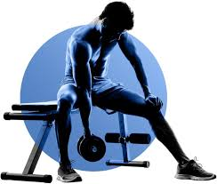

About Me
My Professional Experience
Having a professional level in English & French and a proven track record of 12 years in Project Management, Sustainability, and Business Development. Skilled in identifying and capitalizing on opportunities for revenue growth, cost optimization, and environmental impact reduction. Experienced in collaborating with international cross-functional teams, managing client relationships, and driving business success through innovative solutions.
My Education
- MBA, Emlyon Business School, France (2021-23)
- Data Analytics, Coursera
- Project Management, LinkedIn Learning
- Bachelor in Tech, Applied Petroleum Engineering, UPES, India(2005-09)
Work Experience
- Independent Consultant. (2022- Present)
- Reliance Industries Ltd. (2016-21)
- Petrofac international LTd. (2014-16)
- Toyo Engineering India Ltd. (2013-14)
- Various Companies. (2010-13)
Key Projects Delivered
- Fundraising of 2.3M Euros from European Innovation Council
- Diversifying Vilmorin Jardin's revenues from purely B2B to a mix of B2B & B2C
- Helping Icons & Company in funding of 450K Euros for developing art marketplace
Know more about me
My LinkedIn ProfileHobbies
